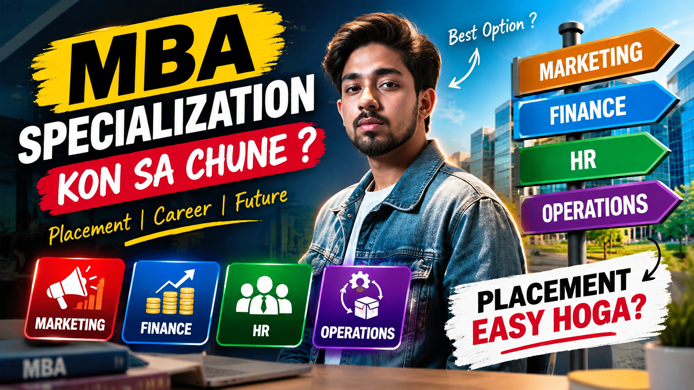
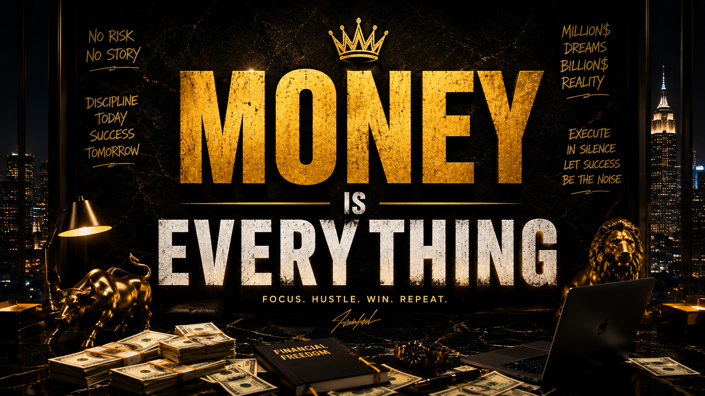
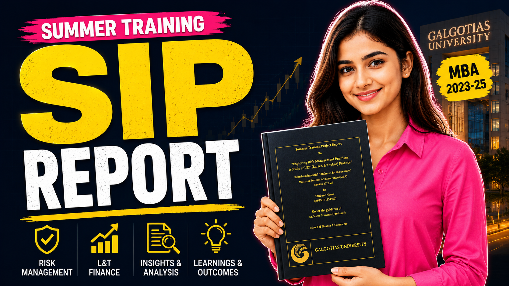
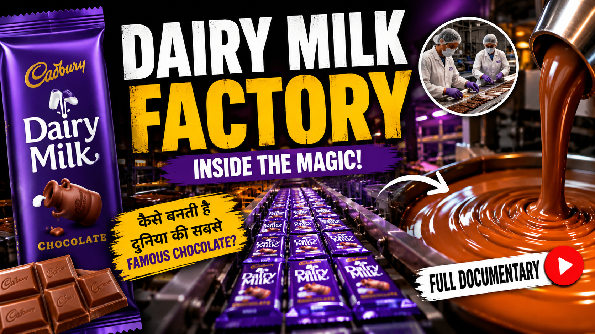
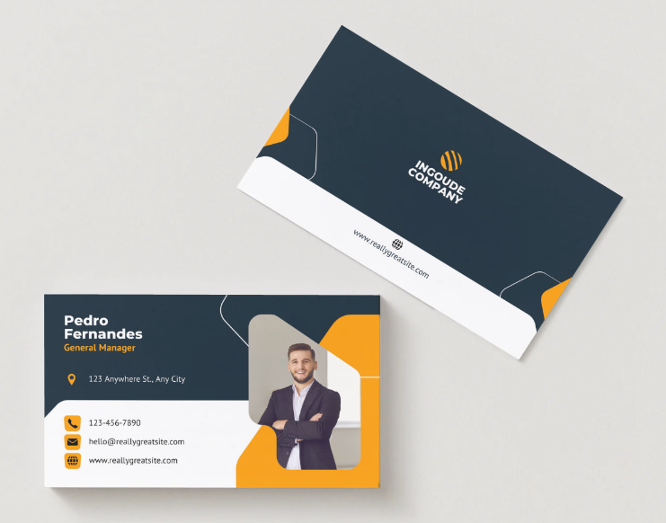
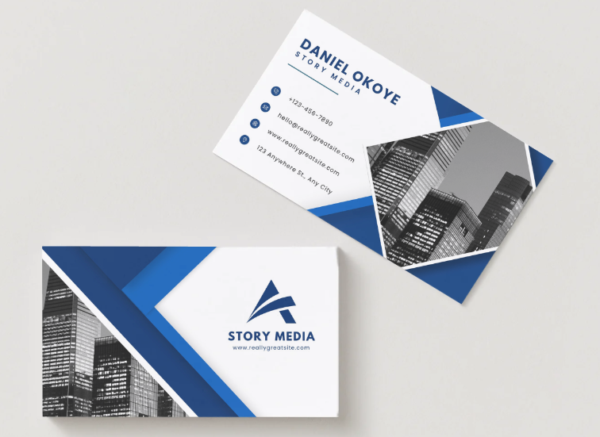
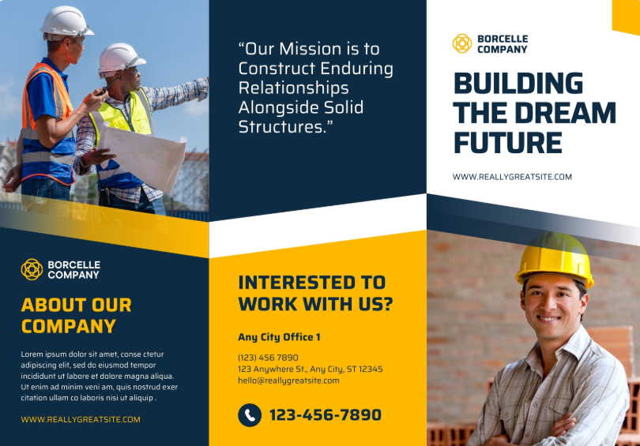
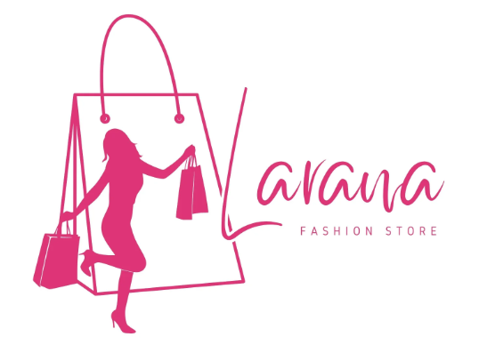
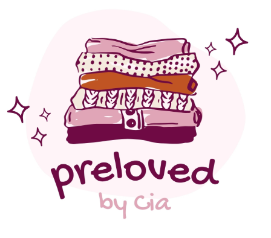
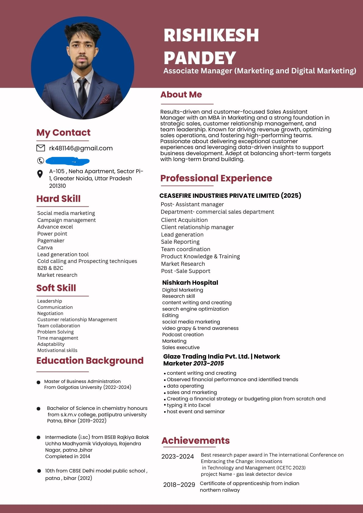

Featured Video 1
Selected video from Rishikesh Pandey Vlogs.
Watch on YouTube →A growing collection of my content, academic projects, creative work, sponsored promotions and professional journey.
Add your channel screenshot below. Then add 3–5 selected videos with thumbnail, title and YouTube link.
Travel, student life, MBA guidance and practical content.
Visit YouTube Channel →Selected video from Rishikesh Pandey Vlogs.
Watch on YouTube →
Selected video from Rishikesh Pandey Vlogs.
Watch on YouTube →
Selected video from Rishikesh Pandey Vlogs.
Watch on YouTube →
Selected video from Rishikesh Pandey Vlogs.
Watch on YouTube →
Selected video from Rishikesh Pandey Vlogs.
Watch on YouTube →Documentary-style content means researched/story-based videos that explain a topic in depth. Since you use another channel for documentary videos, that work has its own section below.
Use this section for your second channel where you publish documentary/research-based videos.
Research-based, story-driven videos covering social and informational topics.

Research-based documentary video.
Watch Documentary →
Research-based documentary video.
Watch Documentary →
Research-based documentary video.
Watch Documentary →
Research-based documentary video.
Watch Documentary →Selected MBA academic work and presentations. Each item below opens the original uploaded file directly.
Data Science & Analytics Applications and Learning Experience — Future Interns.
Open SIP Report →Small-Medium Enterprise (SME) using SAP tools in the automobile industry.
Open in PowerPoint →MBA strategic project covering transformation, operations, technology, finance, risk and change management.
Open Project Report →Marketplace for on-demand services — connecting service providers with consumers.
Open Project Report →A selection of thumbnail designs, visiting-card concepts, pamphlet designs, logo concepts and an engagement invitation video.

YouTube thumbnail design.

16:9 thumbnail concept.

Academic-content thumbnail.

Documentary-style thumbnail design.





Vertical 9:16 invitation-video creative.
Show the PG/property promotions you have worked on. Add only genuine sponsored/promotional work and describe your role accurately.
Location • Promotional content • Your role
View Promotion →Location • Promotional content • Your role
View Promotion →Location • Promotional content • Your role
View Promotion →Professional documents from your career journey. For privacy, remove personal addresses, phone numbers, employee IDs, signatures or other sensitive details before publishing offer letters.

Professional resume — click the preview to open the full-size image.
View Resume →Role / Company / Year
View Offer Letter →Role / Company / Year
View Offer Letter →Role / Company / Year
View Offer Letter →